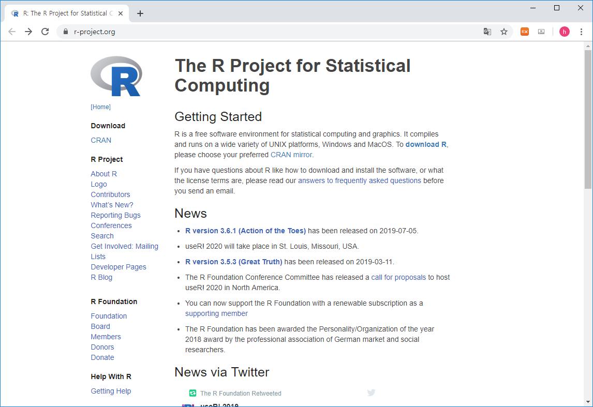
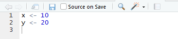
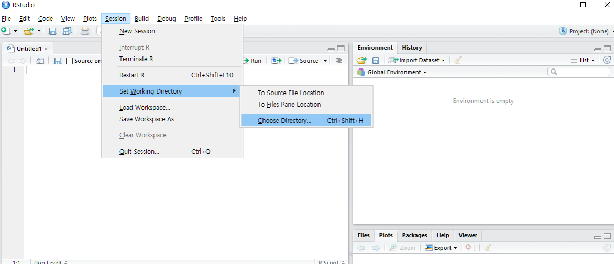

Chapter 2 R basics
2.1 What is R / Rstudio

R 사용을 위해서는 R 언어의 코어 프로그램을 먼저 설치하고 그 다음 R 언어용 IDE인 RStudio 설치가 필요합니다.
2.2 R / Rstudio installation
R 사이트에 접속 후 (https://www.r-project.org/) 좌측 메뉴 상단에 위치한 CRAN 클릭. 
미러 사이트 목록에서 Korea의 아무 사이트나 들어감

Download R for Windows를 클릭 후 base 링크 들어가서


Download R 3.6.3 for Windows 링크로 실행 프로그램 다운로드 (2020.3 현재 R 버전은 3.6.3)

로컬 컴퓨터에 Download 된 R-3.6.3-win.exe 를 실행하고 설치 프로그램의 지시에 따라 R 언어 소프트웨어 설치
Rstudio는 R 언어를 위한 오픈소스 기반 통합개발환경(IDE)으로 R 프로그래밍을 위한 편리한 기능들을 제공해 줍니다.
다음 사이트에 접속 (https://www.rstudio.com/), 상단의 Products > RStudio 클릭

RStudio Desktop 선택

Download RStudio Desktop 클릭

RStudio Desktop Free 버전의 Download를 선택하고

Download RStudio for Windows (2020.03현재 version 1.2.5033) 클릭, 다운로드

로컬 컴퓨터에 다운로드된 RStudio-1.2.5033.exe를 실행하고 설치 가이드에 따라 설치 완료
2.3 Rstudio interface

2.4 Keyboard shortcuts
- 참고사이트
- https://support.rstudio.com/hc/en-us/articles/200711853-Keyboard-Shortcuts
- Tools –> Keyboard shortcut Quick Reference (
Alt + Shift + K)
- 코드편집창 이동 (
Ctrl+1) 콘솔창 이동(Ctrl+2) - 한 줄 실행 (
Ctrl+Enter) - 주석처리 (
Ctrl + Shift + C)- 또는
#으로 시작하는 라인
- 또는
- 실습
- 코드편집창에서 다음 입력
- 
- 단축키
Ctrl + enter로 코드 실행 - 단축키
Ctrl + 2로 커서 콘솔창으로 이동 x값x+y값 확인- 단축키
Ctrl + 1로 코드편집창 이동 - 단축키
Ctrl + Shift + C사용
2.5 Set working directory
- 시작 전 항상 작업 디렉토리 설정
- 예를 들어 c: 아래 새로운 디렉토리 rprog01 을 만들고 작업공간으로 설정
- 또는 아래와 같이 RStudio 메뉴 에서 설정 
2.6 Help
- R의 장점 중 하나 (예제 포함)
2.7 RStudio workspace


2.8 R packages
- R comes ready loaded with various libraries of functions called packages
- ex) sum() is in the “base” package and sd() in the “stats” package
- The packages can be found in numerous server locations on the web called repositories
- The Comprehensive R Archive Network (CRAN) http://cran.r-project.org/web/views/
- Bioconductor specialised in genomics http://www.bioconductor.org/packages/release/bioc/

- UsingR package installation

- UsingR package loading
- R 설치 디렉토리
- R 패키지 설치 디렉토리

2.9 Data sets
- Packages include accompanying data sets
- R has a datasets package that is loaded automatically
- The data function produces a copy of dataset in user’s workspace
2.10 Cheatsheet